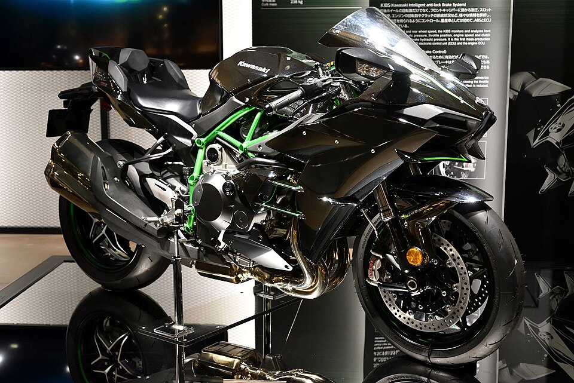

Kawasaki Ninja H2
The Kawasaki Ninja H2 is a supercharged four-stroke supersport-class[13] motorcycle in the Ninja sports bike series manufactured by Kawasaki, featuring a variable-speed centrifugal supercharger.[14][15][16][17]
Its namesake is the 750 cc Kawasaki H2 Mach IV,[18][19] an inline triple that was introduced by Kawasaki in 1972 to "disrupt what it saw as a sleeping motorcycle market".[20]
Its Ninja H2R track-only variant is the fastest and most powerful production motorcycle on the market, producing a maximum of 310 horsepower (230 kW) and 326 horsepower (243 kW) with ram-air.[1] The H2R has 50% more power than the fastest street-legal motorcycles, while the street-legal Ninja H2 has a lower power output of 200 hp (150 kW)[21]–210 hp (160 kW) with ram-air.[1]
Design
Kawasaki selected the literbike platform for its top-of-the-line Ninja H2 model, rather than continuing with the higher-displacement Ninja ZX-14 hyperbike. Cycle World's Kevin Cameron explained that the literbike class is "the center of the high-performance market", attracting the best development in racing, with the best chassis and suspension design, so it made sense for Kawasaki to create a machine that could leverage this.[20]
The H2 is the first production motorcycle with a supercharger,[22] although turbochargers were available on some models in the early 1980s.
Specifications in the infobox are from Kawasaki unless noted.[23]
Production
The street-legal Ninja H2 has mirrors in place of the track-only H2R's winglets,[21] and plastic body panels in place of the H2R's carbon-fiber panels but there is the H2 carbon version that has them in carbon. The street-legal H2 is said to make 200 horsepower (150 kW), probably with reduced supercharger boost compared to the H2R.[21] The H2 and H2R share the supercharger (with a lower boost level on the H2) and many other components, with the exception of the head gasket, cam profile and timing with ECU mapping, exhaust system, and clutch (the H2R's clutch has two additional plates).[1]
For 2017, Kawasaki made a limited-edition model with 120 units produced globally: the individually numbered Kawasaki Ninja H2 Carbon with special paint and carbon-fiber upper cowl. For 2017, the standard Ninja H2 was also updated.[24]
For 2018, Kawasaki made a new sport touring version of the H2, the Kawasaki H2 SX, with a claimed wet weight of 256.1 kg (564.5 lb). Features that are options on the base model H2 SX come standard on the Kawasaki H2 SX SE, which has a claimed wet weight of 260.0 kg (573.3 lb).[25] It has revised throttle bodies, camshafts, crankshaft, pistons, cylinder and cylinder head as well as a new exhaust system aimed at increasing mid range torque. The intake system and supercharger impeller were also redesigned. A new larger fuel tank, rear trellis subframe and panniers increase the bike's weight by 19 pounds (8.6 kg).[26]
For 2019, the H2 received an update with 15% more power from updates to the intake, spark plugs, ECU, and air filter, among other components. Also added was a new LED lighting scheme and a special top coat of paint that is claimed to be self-healing and able to smooth over small scratches in warmer conditions. Also new were lighter and smaller Brembo Stylema calipers, a new TFT dash, and smartphone connectivity that provides information about the GPS route, speed, RPM, current gear, fuel mileage, fuel level, and odometer.[27][28] In addition, the 2019 Ninja H2 SX SE+ features electronically controlled suspension.[29]
Engine and Supercharger
The H2's engine is a 998 cc (60.9 cu in) 4-valve, dual overhead cam inline-4 with a two-speed centrifugal supercharger.[30][31][32][33]
The supercharger is driven by a series of gears and shafts connecting the flywheel to a planetary drive, finally spinning a dog-shifted two-speed shaft attached to the impeller.[33] Throttle control is electronic.[34] A centrifugal supercharger has the advantage of generating less heat than other designs, especially scroll-type or screw-type superchargers.[33][22] Without an intercooler (which the H2 lacks), excess heat in the intake charge can cause pre-ignition that can damage or destroy the engine.
Pre-Intermot engine announcements and analysis
The H2 was announced by Kawasaki in a late-2014 teaser campaign, and was widely expected to be fully revealed at the Intermot motorcycle trade show the same year. Before full details were released by Kawasaki, the supercharged inline-4 engine[17] was thought by several industry observers to be identical to, or closely related to, a nearly 1,000 cc inline-4 with a centrifugal supercharger displayed by Kawasaki at the 2013 Tokyo Motor Show.[15][b] [42]
Cameron published an analysis showing that an engine of that displacement, mildly boosted at 5 psi (34 kPa), would generate 203 horsepower (151 kW)—more than that of Kawasaki's current leader, the 191.7-horsepower (143.0 kW) [43] ZX-14 (horsepower figures are expressed at the rear wheel). The same engine would generate 257 horsepower (192 kW) with 10 psi (69 kPa) of pressure. His analysis included a discussion of the benefits of a two-speed supercharger for more linear power delivery (as opposed to the intractable Japanese turbo bikes of the 1980s that suffered from turbo lag). Cameron also said Kawasaki patent documents suggested the engine would rely on evaporative cooling using port fuel injection, instead of a bulky intercooler.[20]
Kawasaki claimed the 2013 model had the first supercharger designed by a motorcycle manufacturer.[44] In 2013, journalists said that the engine could power the "next generation [Ninja] ZX-14R" sportbike.[45] Journalists also noted that Kawasaki already has a production inline-4 supercharged (albeit intercooled[46]) engine powering the Jet Ski Ultra 300X personal watercraft.[47]